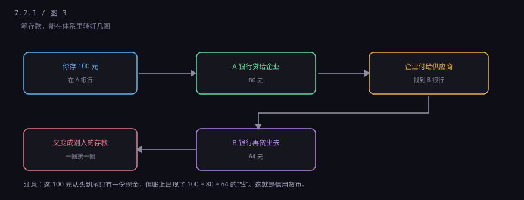
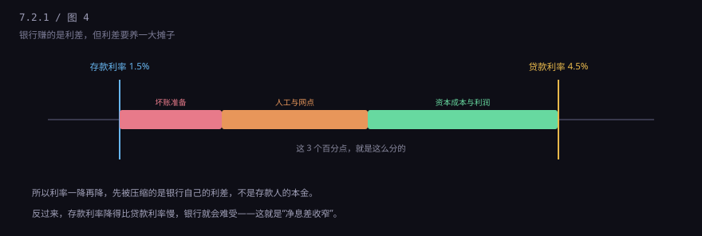

约 0.2 万字 · 4 张图 · 你存进去的一万块，当天就不在银行里了
你在柜台存一万块现金。柜员点完，给你一张回单。这一万块纸币， 当天就会被装进运钞车，送到中心金库，或者直接调给别的网点。 你账上多了一万，但那一万张纸已经不在你存钱的那个抽屉里了。
为什么？因为银行不靠保管现金赚钱。它把这一万块换成能生息的东西： 贷给别人、买国债、放在央行吃准备金利息。留在手里的现钞， 只够应付日常取现——通常只有存款的百分之几。
所以第一次听到这个说法的人都会愣一下： 银行没有把钱"存"起来，它把钱"用"掉了。 而你手里那张存单，是它欠你的凭据。
要理解银行，只需要看懂一张表：资产负债表。它只有两栏， 左边写"钱去哪了"，右边写"钱从哪来"，两栏永远相等。
左边是资产：贷款（最大头）、债券投资、放在央行的准备金、少量库存现金。 右边是负债：存款（最大头）、同业借来的钱、股东投入的资本。
注意"存款"在右边，也就是负债。这在会计上是对的： 银行欠你这笔钱，所以它是银行的债。你觉得钱是自己的， 但在银行的账上，你是它的债权人。
这张表解释了很多事。比如为什么银行拼命拉存款——存款是它的原料， 没有存款就没钱放贷。比如为什么银行怕挤兑——它的资产大多是三五年甚至三十年的贷款， 负债却是随时能取的活期。
你去取一千块，银行给你的不是"你当初存的那张"，是从池子里舀出来的一勺。 只要池子里还有水，你就能取；池子干了，就取不出来。
平时池子不会干，因为每天有人存、有人取，进出大体平衡。 银行只需要留一小部分现金应对日常支取，剩下的都能放出去生息。 这个"留一部分"的比例，就是准备金率。
关键在于：你的存款是随时能取的，但银行的资产是三五年才回本的。 这个错配是银行的商业模式，也是它天生的弱点。平时它靠"大部分人不会同时来取"维持， 一旦这个假设被打破，就出事。
假设有谣言说某家银行要倒了。储户的第一反应是"赶紧去取"。 理性吗？对每个人来说都理性——别人都去取，我不去就取不到了。 但当所有人都这么想，银行必然倒。
这是经济学里典型的"自我实现的预言"：因为大家相信它会倒，所以它真的倒了。 1930 年代美国大萧条，几千家银行就是这么倒的——很多银行本身资产是健康的， 只是扛不住所有人同时来取。
后来的解法有两个：一是存款保险（你不用担心取不到，就不会去挤）， 二是央行兜底（银行实在缺现金，可以拿资产去央行抵押换钱）。 这两条是现代银行体系的保险丝，下一节和 7.2.4 分别讲。
还有一件事更反直觉：你存的一笔钱，能让整个社会的"钱"变多。

你存 100 元，银行留下 20 元备付，贷出去 80 元给企业； 企业付给供应商，供应商把钱存进另一家银行；那家银行再留下 16 元，贷出去 64 元…… 这样一圈一圈下去，最初的 100 元在账面上变成了 100 + 80 + 64 + …
这不是骗局，是信用货币的基本机制：贷款会创造存款。 整个社会的"钱"绝大部分不是印出来的，是银行放贷时记出来的。 这个过程有个上限，就是准备金率和大家的取现意愿——7.2.3 会专门讲。
银行的主营业务很朴素：低价借进来，高价贷出去，赚中间的差。

存款利率 1.5%，贷款利率 4.5%，中间 3 个点。这 3 个点不是净赚： 要提坏账准备（总有贷款收不回来）、要付人工和网点租金、 要给股东回报、要留资本满足监管要求。真正落到利润上的，通常只有一个点上下。
这也解释了一个现象：利率一降再降，银行的净息差就被压薄。 贷款利率降得比存款快，中间那道缝就窄了。所以你会看到银行拼命做中间业务 （代销、理财、结算），因为那块不占用资本。
一句话：银行是一个把短期资金变成长期资金的转换器。 它一边收着随时能取的活期，一边放出三五年才回本的贷款， 用期限错配赚差价，用信用和监管撑住这个错配。
它有两条命门：一是信心（大家相信钱取得出来）， 二是资产质量（放出去的贷款收得回来）。 信心崩了是挤兑，资产烂了是坏账，这两件事是银行史上所有危机的原型。
下一节讲一个更具体、也更贴身的问题：你在银行的那笔存款， 法律上到底是什么？银行倒了，你能拿回多少，凭什么？